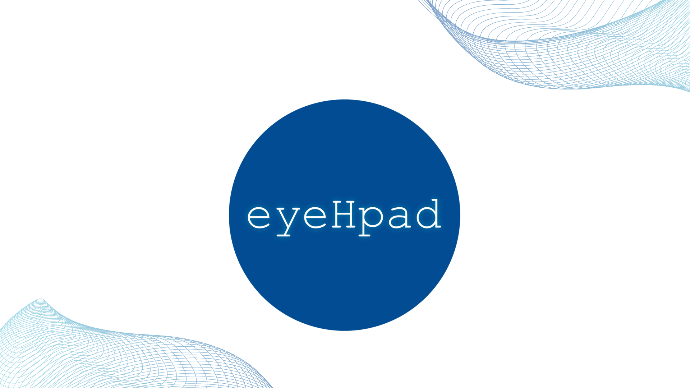

- Need
- Help people living with a chronic illness manage it better day to day.
- Trade-off
- The topic was too broad for a single solution. My research and personas led me to choose a specific audience: children with diabetes.
- Answer
- An app designed for them, combining education, independence and gentleness.
Mariam Tounkara, engineer and designer
The right problem before the right solution.
I turn fuzzy needs into clear solutions by bridging the business, the technology and the people who use it.
My CV (PDF, in French)
Final-year internship in business analysis
starting 3 May 2027
Case study
MediTrack: why patients abandon their tracking app
A treatment-tracking app for chronic illness loses its users after a few weeks, even though they keep taking their medication. I took the problem back to square one, the way a Business Analyst would.
The problem wasn't forgetting. It was staying motivated over time.
- 01Scoping and persona
- 02Benchmark of Medisafe and Strava
- 03Interview guide and 8 sourced needs
- 047 requirements and GDPR constraints
- 05User stories and acceptance criteria
- 06MoSCoW prioritisation
- 07Target process in BPMN
- 08Roadmap in 3 releases
Projects
School projects
-

-

- Need
- Mobotix asked us to go beyond simple video surveillance. We narrowed this very open brief down to French care homes (EHPAD), then facing a major public scandal: how could we support staff and reassure families?
- Trade-off
- Field research reshaped the idea. A care assistant told us cameras would help her less than extra staff, but that many falls go unnoticed. The law strictly limits what can be filmed. And we wanted to support staff, not replace them.
- Answer
- We ruled out robots, which could feel like they were taking people's place, and chose thermal cameras: more discreet, and at the heart of Mobotix's expertise. Software detects abnormal temperature, agitation or immobility and alerts staff, while an app reassures families.
- My role
- Analysis: studying existing solutions and building our arguments. I also ran a field test, pitching the idea by phone to professionals as a start-up offer to gather their reactions.
-

- Need
- Make supermarket shopping simpler. Our 10 interviews and in-store observations revealed three pain points: getting lost in the aisles, forgetting items and overspending.
- Trade-off
- Reconciling opposite profiles, from the student who wants to be done quickly to the retiree who enjoys taking his time. Hence a two-step journey: the list is prepared at home, and the cart guides you in store.
- Answer
- A shopping list built in the app, from recipes or item by item. A QR code sends it to the cart's screen, a store map draws the route, and you pay from your phone.
- My role
- User research: in-store observation and interviews, then the personas, in a pair, and the customer journey. I also co-designed the site map and contributed to the Figma mock-ups.
-
Research phase. Presentation planned for April 2027.
Skills
Analysis
- Requirements gathering and interviews
- Benchmarking
- Functional specifications
- User stories, MoSCoW
- BPMN, roadmap
Design
- User research, personas
- UX and UI design
- Figma, prototyping
- Graphic facilitation
Technical
- Python, R
- SQL
- C, C++, Java
- HTML, CSS, JavaScript
- Basics: React, APIs
Also: Photoshop, Illustrator, InDesign, After Effects, Premiere Pro, Notion.